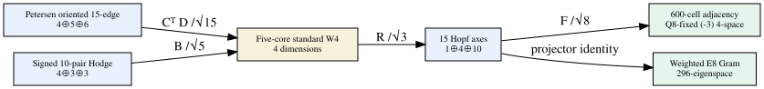
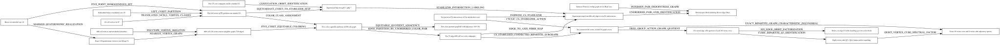
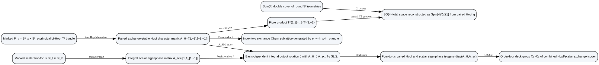
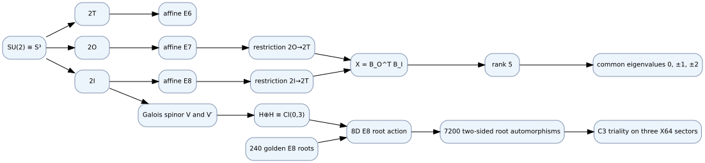

S³ geometry network
Geometric structures, drawn
Original diagrams from the current S³ structure network. Browse each diagram in full size, or download the original network with its graph data and scripts.
Scope: Diagrams illustrate finite geometric constructions. A diagram alone does not certify its physical interpretation. Original network: v1.49.

batch10 tensor compositionOpen ↗

batch11 2T C3 cover towerOpen ↗

batch12 A5 600 E8 matrix coefficient bridgeOpen ↗

batch13 Petersen A5 600 E8 commuting mapOpen ↗

batch1 exceptional bridgesOpen ↗

batch3 spin4 coreOpen ↗

batch4 exchange isogeny coreOpen ↗

batch5 finite coresOpen ↗

batch6 golden e8 bridgesOpen ↗

batch7 mckay clifford bridgeOpen ↗

batch8 q8 triality bridgeOpen ↗

batch9 common axis quotient diagramOpen ↗

hopf quotient cover towerOpen ↗